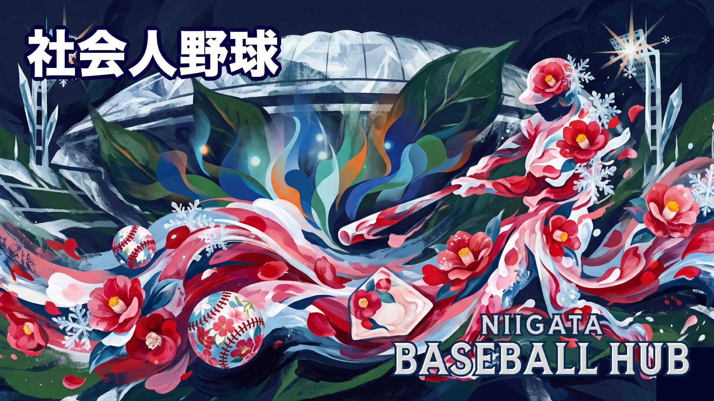

🏆
AMATEUR BASEBALL
社会人野球
JABA（日本野球連盟）加盟の新潟県チームと、毎年5月にエコスタジアムで開催されるJABA選抜新潟大会の情報をまとめています。
チーム・大会情報
JABA 新潟
新潟コンマーシャル倶楽部
クラブチーム
創部1916年（新潟商業高野球部OBが設立）
拠点新潟市
所属JABA新潟県野球連盟（日本野球連盟）
目標全日本クラブ野球選手権大会 出場
特徴現在も自らの練習と後輩学生の技術指導を続ける。登録選手17名（2026年）
⭐ 1934年 都市対抗野球出場（新潟県勢として史上初）
⭐ 2015年 創部100年（全国4番目の歴史を誇るクラブ）
JABA新潟県野球連盟
連盟公式
第68回 JABA選抜新潟大会（2026年5月1日〜4日）出場チーム
新潟コンマーシャル倶楽部
🟢 新潟代表
JR東日本東北
企業
読売ジャイアンツ（三軍）
プロ三軍
バイタルネット
企業
テイ・エス テック
企業
日立製作所
企業
JR秋田
企業
静岡硬式野球倶楽部
クラブ
マルハン北日本カンパニー
企業
全足利クラブ
クラブ
FedEx（フェデックス）
企業
千曲川硬式野球クラブ
クラブ
※ 出場チームは年度により変わります。最新情報は JABA公式サイト でご確認ください。
第67回（2025年）は2025年5月2〜5日開催。第68回（2026年）は2026年5月1〜4日開催。
主要大会情報
TOURNAMENTS全国三大大会社会人野球の頂点
都市対抗野球大会
社会人野球日本選手権大会
全日本クラブ野球選手権大会
新潟開催大会エコスタでトップ観戦
第68回 JABA選抜新潟大会
入場料
JABA北信越クラブカップ大会
都市対抗 新潟予選新潟代表決定戦
都市対抗野球大会 北信越2次予選
全日本クラブ野球選手権 新潟予選
JABA各地区連盟主催大会